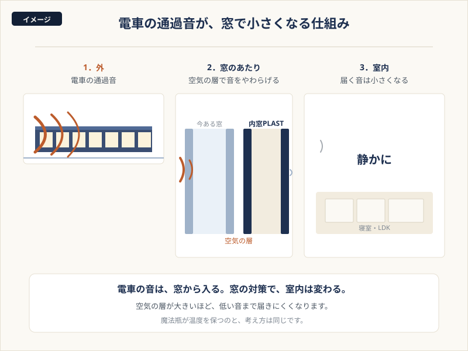
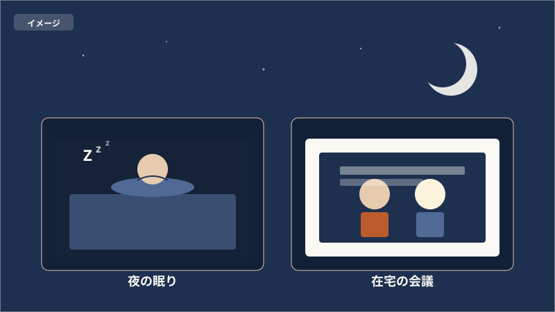
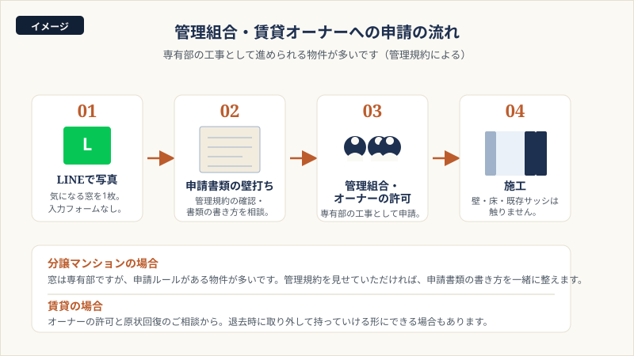
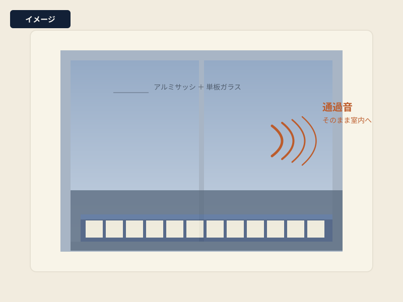
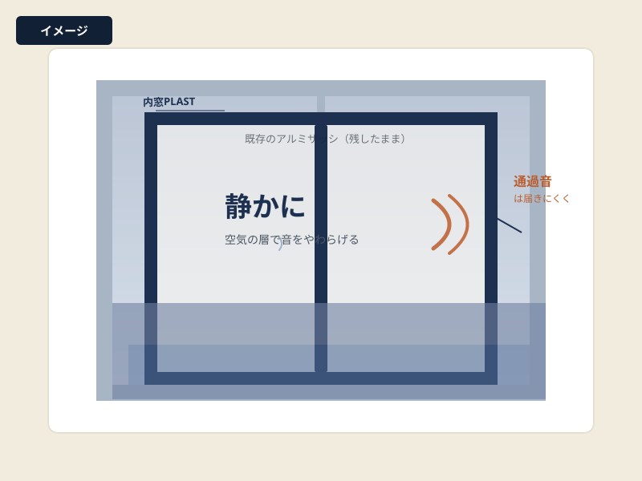

この記事の内容（タップで開く）
その夜のこと
終電が過ぎて、ようやく静かになったと思ったころに、貨物列車が走る。少し離れたところからゴーッと近づいて、窓ガラスがビリッと震えて、また遠ざかっていく。そのたびに目が開いて、時計を見るとまた同じ時間。眠りに戻るまでに、けっこうな時間がかかります。
朝になれば忘れてしまうし、人にも言いません。駅から近いのは助かっているし、引っ越すほどでもない。けれど、こういう夜が週に何度もあると、体のどこかに疲れが残っていきます。
- 終電のあと、貨物列車の音で目が覚めてしまう
- 始発の音で、いつもより早く起きてしまう
- 通過電車のたびに、窓ガラスがビリッと震える
- 在宅会議の途中、相手の画面の向こうにまで電車の音が届いている気がする
- 子どもの寝室が線路側で、布団を被せてもうまく寝つけない
- 売却の話が出るたび、駅近の良さと騒音を天秤にかけてしまう
大声で困っていると言うほどではない。我慢できないわけでもない。けれど、地味に疲れる。その感覚に心当たりがあるなら、原因の多くは「窓」にあります。マンションだから無理、と決める前に、なぜ電車の音が窓から入ってくるのかをお話しします。
なぜ、電車の音は窓から入るのか
マンションは、戸建てに比べて壁がしっかり作られています。コンクリートの壁の遮音性能は、それ自体としては高いです。けれども、サッシだけは戸建てと変わらない作りのことが多く、古いマンションだとアルミサッシと単板ガラスの組み合わせのまま、というお宅もよく見かけます。電車の通過音や貨物の音は低い音まで含むので、壁ではなく窓から、そのまま室内に入ってきます。

マンションだから手が打てない、ということはありません。むしろ、壁は変えずに窓だけで対策できる、と考えると、マンションこそ内窓と相性が良いと言えます。
内窓PLASTで変わること
内窓PLASTは、今ある窓の内側にもう一枚の窓を足す商品です。既存のサッシは外しません。壁にも床にも手を入れません。多くのお宅は、その日のうちに取り付けが終わります。

主役の強み｜音を通しにくい構造
PLASTは窓枠まわりの気密性が高い構造です。厚めの防音合わせガラスと組み合わせると、音が通り抜けにくくなります。寒さと騒音の厳しい北海道・東北で、防音内窓として長く選ばれてきた製品です。わたしたちフクシマ建材は、九州で内窓PLASTの施工を積み重ねてきました。窓の防音を考えるときの目安として、音の伝わり方を整理してみます。
うれしい副産物｜冬の窓辺の冷えと結露がやわらぐ
窓を二重にすると、防音だけでなく断熱性も上がります。防音のために付けたら、冬の窓際の冷えがやわらいで、結露も出にくくなった。そういう方が多くいらっしゃいます。マンションの北側の部屋や、カーテンの裏に隠れた結露でお困りの方には、副産物の意味でも喜ばれます。
うれしい副産物｜鍵金具が目立たない、すっきりした佇まい
PLASTは鍵金具が目立たない、すっきりした見た目が特長です。カラーは3色で、お部屋の雰囲気を損ないません。マンションのコンパクトな窓辺でも、見た目が重くなりません。
管理組合・賃貸オーナーへの申請のこと
マンションでまず気になるのが、「うちは申請が要るの？通るの？」です。ここでつまずいて先に進めない方がたくさんいらっしゃるので、最初にお話しします。

分譲マンションの場合
窓は専有部に当たりますので、内窓の設置は基本的にお住まいの方の判断で進められます。ただ、申請ルールを定めている管理組合も多いので、まずは管理規約をご確認ください。LINEで規約の該当ページや窓の写真を送っていただければ、規約のどこを確認するとよいかを一緒に整理します。書類の作成や管理組合への申請そのものはお住まいの方にお願いしていますが、過去に同じような相談を受けた経験から、確認のしどころをお話しします。理事会の前に時間を取ってじっくり相談したい、という方には、その流れに合わせて動きます。
賃貸マンションの場合
賃貸の場合はオーナー様の許可が要ります。退去時の原状回復のご相談も多いです。オーナー様にご説明いただくときの「どんな工事になるか」「退去時の選択肢」をまとめた商品の概要資料はご用意できます。実際の交渉はお住まいの方とオーナー様の間でお願いしていますが、説明の材料としてお使いいただけます。退去時の取り外しの可否は、物件や施工方法、オーナー様との取り決めによって変わります。最初のLINEでのやり取りで、可否の見立てをお話しします。
近い条件で施工した経験から
過去に近い条件のマンションで施工した経験があれば、工事の流れの一般的な目安をお話しできます。物件名や個別のお部屋の情報を外に出すことはありません。守秘の範囲は最初にすり合わせます。
管理規約の内容は物件ごとに違います。ここに書いた進め方も、すべての物件で同じように通るものではありません。実際の判断は管理組合・オーナー様にあります。書類づくりや交渉の道筋を整える、というところがわたしたちの役目です。
施工事例
線路沿い・駅近のマンションでの実例です。どこまで静かになるのか、言葉より、現場で起きたことをお伝えします。


線路沿いのマンションで、今ある窓の内側に
熊本駅の近く、線路沿いのマンションにお住まいの方からのご相談でした。日中も夜も電車が通り、音が気になって落ち着かないとのこと。専有部の工事として、今ある窓の内側に内窓PLASTを設置しました。工事は短時間で完了しています。
踏切のカンカンが、室内に響かなくなる
家のすぐ近くに踏切があり、夜になっても警告音が室内に響いていたお宅です。「音そのものをなくす」のではなく、「室内で気にならない範囲まで小さくする」を目標に、内窓PLASTに防音合わせガラスを組み合わせて設置しました。
こちらは戸建て住宅の施工事例ですが、踏切音という近い騒音源としてご紹介します。マンションでも、踏切や駅構内のアナウンスでお困りの方は、似た方向で考えていけます。
このほかの事例（マンション・分譲・賃貸など）も準備中です。あなたの窓に近い事例を、LINEで個別にご紹介することもできます。
お客様の声
実際にお使いの方からいただいた声です。
夜中の貨物の音で目が覚めることが減りました。眠りが深くなった気がします。
線路沿いマンションにお住まいのお客様
在宅会議の途中、相手に電車の音が聞こえているかも、と気にしなくてよくなりました。
駅近マンションで在宅勤務中のお客様
マンション・線路沿いのお客様の声を引き続き収集しています。掲載は許諾と日付を確認のうえ確定します。
いずれもお客様個人の感想です。効果には個人差があり、結果を保証するものではありません。掲載は許諾と日付を確認のうえ確定します。
フクシマ建材が選ばれる理由
マンションの工事では、養生・搬入経路・在宅の段取り・他のお部屋への配慮など、戸建てとは別の気配りが要ります。専有部の工事として、壁・床・既存サッシは触らずに進めます。先進的窓リノベ2026などの補助金にも対応します。専門用語をかみくだいて、分かりやすく丁寧にご説明するのが、わたしたちのやり方です。
数値は当社の施工実績の集計です。九州での実績数や順位などの比較表記は、調査の主体・範囲・時点を確認のうえ掲載します（裏取り中）。
費用と補助金のこと
マンションの場合、まずは寝室の1〜2窓だけ、というご相談がいちばん多いです。ご予算と効果の出やすさを天秤にかけて、ご一緒に決めていきます。PLASTは品質を重視した製品のため、他の内窓と比べると価格はやや高めです。そこは正直にお伝えします。そのうえで、補助金を使うと実際のご負担は下がります。
※ 税・工賃込みの目安です。窓のサイズ、防音合わせガラスの仕様、窓の数で変わります。マンションは搬入経路や養生の段取りで多少前後することがあります。後から想定外の費用が出ないよう、正確な金額はお見積もりでお出しします。
相談から施工までの流れ
LINEで写真を送る
気になる窓の写真と、マンション名（市区町村まででOK）を送ってください。入力フォームは不要です。
見立てと概算をお返事
写真をもとに、おおよその費用と効果の目安をお返しします。管理組合への申請が要るかは規約の確認が必要ですので、確認のしどころを一緒にお話しします（最終的な判断は管理組合・オーナー様にあります）。
規約確認・申請の壁打ち（必要なら）
分譲は管理組合、賃貸はオーナー様への相談を進めるための情報整理をご一緒します。商品の概要資料や、お住まいの方が確認しておくとよい論点をお渡しします（書類の作成・提出はお住まいの方にお願いしています）。
現地調査
ご希望があれば、実際の窓を見て正確なお見積もりをお出しします。マンションの場合は搬入経路・養生方針もここで決めます。
施工（2〜4時間）
壁も床も既存サッシも触らず、その日のうちに取り付け完了。すぐに静かさを体感いただけます。
よくあるご質問
マンションでも本当に電車の音は静かになりますか
窓を二重にすると、室内に届く音はかなり小さくなります。ただし、電車の音は線路からの距離・列車種別・建物の構造で変わり、結果を保証するものではありません。今の窓の状況を写真で見せていただければ、近い事例とあわせて目安をお返事します。
管理組合の許可は要りますか／申請書類はどうすれば
分譲マンションの窓は専有部に当たりますが、申請ルールがある管理組合が多いです。LINEで管理規約の該当ページや窓の写真を送っていただければ、申請書類の書き方や、過去に通った言い回しの目安を一緒に整理します。理事会の予定に合わせて動くことも可能です。
賃貸でも取り付けできますか／退去時はどうなりますか
賃貸の場合はオーナー様の許可が要ります。退去時の原状回復のご相談にも対応します。物件によっては、退去時に内窓だけ取り外して持ち帰る、という形にできることもあります。オーナー様への説明資料もご一緒にお作りします。
工事中の騒音や匂いは出ますか（マンション特有）
既存サッシは外さず、内側に取り付けるだけですので、はつりや大きな音は出ません。お隣・上下階への養生もご相談しながら進めます。短時間で終わる工事ですので、在宅日の中の数時間で完了するケースが多いです。
工事は何時間かかりますか／在宅でなくても進められますか
1窓あたりおよそ1時間です。多くのお宅は2〜4時間で完了します。在宅が望ましいですが、鍵の受け渡しと立ち会い時間の段取りができれば、ご相談で調整できます。
補助金は使えますか
先進的窓リノベ2026の対象になる可能性があります。条件を満たした場合のみ対象となり、必ず一定額が受け取れるものではありません。お住まいや窓の状況によって変わりますので、LINEで一緒に確認させてください。
LINE登録すると、しつこく連絡が来ませんか
確認なくこちらからお電話することはありません。やり取りはLINEの中だけで、営業の連絡を重ねることもしません。合わないと感じたら、いつでもブロック・退会していただけます。まずは見るだけ、という方も歓迎です。
見積もりは無料ですか／高い工事をすすめられませんか
お見積もりは無料です。ご予算やご希望をうかがったうえで、必要な分だけをご提案します。マンションは寝室1窓から始められますので、むやみに全窓をおすすめすることはありません。費用の目安は、寝室1窓で8〜20万円ほど（税・工賃込／窓のサイズで変わります）。詳しくはこの記事の費用と補助金のことにも載せています。
フクシマ建材について
窓・内窓・玄関ドアのリフォームを専門に、九州一円で施工しています。理念は、分かりやすく、丁寧に。お客様のお困りごとを、専門外の方にも伝わる言葉で解決することを大切にしています。マンションでの工事は、養生や搬入の段取り、管理組合への申請の壁打ちなど、戸建てとは別の気配りが要ります。そこも含めて、一緒に進めます。

マンションの窓は、お部屋ごと・物件ごとに少しずつ違います。だからまず写真を見せていただいて、その窓に合うやり方を正直にお話しします。管理組合の申請が要るなら、その段取りも一緒に。むやみに高い工事はおすすめしません。分かりやすく、丁寧に。現場でも、言葉でも、それを守ります。
九州プラスト（フクシマ建材株式会社）
「もっと早く付ければよかった」。
マンションのお客様から、施工のあとに、そう言っていただくことがあります。
うちの窓はどうだろう、管理組合の申請はどう書けば、という段階で大丈夫です。
写真を1枚送っていただくところから、はじめられます。